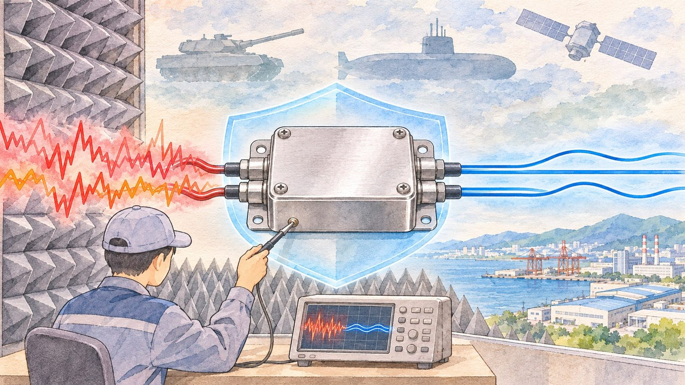

시내버스 신양여객 월급 10억 밀려…통상임금 압류에 운영자금 막혀
창원 시내버스 업체 신양여객 기사들이 이달 월급을 받지 못하고 있다. 경남도민일보에 따르면 한국노총 신양여객지부는 13일 지급됐어야 할 급여 약 10억원이 17일까지 들어오지 않았다고 밝혔다. 회사는 앞으로 두 달간 임금 지급이 어렵다고 노조에 통보했다. 지부 조합원은…
경남의 10월 수출은 44억5천만 달러로 1년 전보다 27.1% 줄었다. 지난해 10월 선박 인도가 몰린 데 따른 기저효과다. 선박을 뺀 상위 10대 품목 가운데 9개가 늘었고, 승용차는 올해 월간 최대를 기록했다. 무역수지는 49개월째 흑자다.
머리기사 읽기 →국내·환율: 11월 17일(화) 정규장·서울 외환시장 주간 종가(오후 3시 30분) 기준(시사저널e·뉴스1 보도). 코스피는 종가 기준으로 2월 2일 이후 처음 5,000선 아래로 내려갔다. 미국 주식·반도체지수·브렌트유(1월물): 현지 11월 17일(화) 마감 기준(한국시간 18일 새벽 서울파이낸스·뉴스핌 보도). 엔비디아는 장 마감 뒤 8~10월 분기 매출 1,158억4천만달러를 발표해 시장 전망치(1,090억달러)를 웃돌았고, 주가는 정규장 0.4% 하락 뒤 시간외 거래에서 3%가량 올랐다(머니투데이). 시황은 정보 제공용이며 투자 권유가 아니다.
창원 시내버스 업체 신양여객 기사들이 이달 월급을 받지 못하고 있다. 경남도민일보에 따르면 한국노총 신양여객지부는 13일 지급됐어야 할 급여 약 10억원이 17일까지 들어오지 않았다고 밝혔다. 회사는 앞으로 두 달간 임금 지급이 어렵다고 노조에 통보했다. 지부 조합원은…
기상청 18일 오전 5시 단기예보에 따르면 18일(수)부터 찬 공기가 내려와 춥겠다. 창원은 오전에 흐리다가(강수확률 30%) 오후에 맑아지고, 낮 최고기온은 14도다.…
창원시가 진해구 웅동1지구 확정투자비 소송 결과에 따라 추가 정산 부담이 생길 수 있다고 창원시의회에 보고했다고 경남도민일보가 17일 보도했다. 시는 사업이 표류한 책임은…
방학 때 끼니를 거를 우려가 있는 아이들이 500원에 점심을 먹는 '500원 식당'이 창원 권역에도 생긴다. 창원시는 17일 시청에서 NH농협 창원시지부, 경남사회복지공동…
창원 청소년 설문에서 응답자 3명 가운데 1명꼴로 주말 하루 5시간 이상 SNS를 쓴다고 답했다. 경남도민일보에 따르면 마산YMCA 청소년사업위원회가 10월 16일부터 1…
17일자 본지 사설은 창원국가산단 기계업의 2분기 생산이 1년 전보다 19.5%, 수출이 34.7% 줄었다고 썼다. 18일자 머리기사는 경남의 10월 수출이 선박을 빼면 10대 품목 중 9개가 늘었다고 전했다. 하루 사이 정반대로 읽히는 숫자가 나왔지만 어느 쪽도 틀리…
소형모듈원전(SMR) 관련 국내외 기업과 연구기관이 창원에 모였다. 경남도는 16~18일 '2026 경남 SMR 국제콘퍼런스'를 열었다고 17일 밝혔다. 세 번째 행사로,…
경남의 1990년생은 다섯 살 많은 1985년생보다 결혼도 출산도 크게 줄었다. 동남지방데이터청이 17일 낸 「인구동태 코호트 DB로 본 1985년생과 1990년생의 동남…

창원 강소기업을 간다 ② / 18일전차와 장갑차, 잠수함, 유도탄 안에는 수많은 전자장비가 빽빽이 들어 있다. 이 장비들은 서로 내뿜는 전자파 때문에 오작동할 수 있다. 창원 의창구 팔용동의 ㈜아이스펙은 그 잡음을 걸러 내는 전자파(EMI) 필터를 만든다. 핵폭발 때 생기는 강한 전자기 펄스(HEMP)…
19일 대학수학능력시험을 앞두고 스마트안경·초소형 카메라로 시험지를 찍어 인공지능(AI)에 물어보는 'AI 컨닝'이 가장 큰 걱정거리로 떠올랐다. 경향신문 보도에 따르면…
버스는 오늘도 승객을 태우고 달리지만, 기사의 월급봉투는 정류장에 멈춰 섰다. 과거 임금 다툼과 이번 달 월급이 한 요금함에 묶여 버린 창원 시내버스의 오늘을 그렸다.
경남도는 17일 도청에서 18개 시군 건설부서와 지역건설업 활성화 협력회의를 열었다. 도에 따르면 민관 합동 하도급 기동팀은 10월 말까지 공사현장·공공기관·건설 대기업 63곳을 찾아 지역업체 310곳을 추천했다. 도는 시군에 발주 전 입찰참가자격 확인과 하도급 수주지원 평가자료 제출을 당부했다. 경남도 보도자료 · 11.17
창원시설공단은 1992년 문을 연 성산구 시민생활체육관을 내년 1월 1일부터 8월 31일까지 전면 휴장하고 수영장 수조·배관, 기계실 온수탱크, 주차장 등을 고친다고 경남신문이 보도했다. 공단은 휴장 기간 다른 체육시설 4곳에서 수영·아쿠아로빅·헬스 프로그램을 늘리는 방안을 협의하고 있다. 경남신문 · 11.17 21:14
국토연구원 「부동산시장 조사분석」 제55호(8월 조사, 전국 6,680가구)에서 경남 가구의 48.1%가 지역 소득에 비해 주택 매매가격이 높다고 답했다. 전국 평균(52.6%)보다 4.5%포인트 낮고, 울산(49.4%)보다 낮으며 부산(46.6%)보다 높다고 경남신문이 전했다. 경남신문 · 11.17 19:05
창원 시내버스 신양여객 기사들이 이달 월급을 받지 못하고 있다. 경남도민일보 보도에 따르면 13일 지급됐어야 할 급여 약 10억원이 나오지 않았고, 회사는 앞으로 두 달간 지급이 어렵다고 통보했다. 통상임금 소송 1심 판결을 근거로 전·현직 기사 64명이 회사의 교통카드 정산 대금 약 24억원을 압류하면서 운영자금이 막혔다는 것이 회사 설명이다.
뿌리는 통상임금이다. 창원지법 마산지원은 지난해 9월 기사 784명이 시내버스 업체 6곳을 상대로 낸 소송에서 원고 일부 승소 판결을 했다. 업계는 미지급금을 약 200억원으로 추산한다. 한 회사의 체불로 끝날 문제가 아니라는 뜻이다.
사설 전문 읽기 →시내버스 준공영제에서 버스 한 대를 하루 운행하는 데 드는 표준 비용이다. 인건비·연료비·정비비 등을 항목별로 정해 산정하고, 회사의 운송수입이 이에 못 미치면 지자체가 차액을 재정으로 보전한다. 창원시는 해마다 인건비를 반영해 표준운송원가를 정해 왔다는 입장이고, 버스 회사는 통상임금 소송으로 생긴 과거 추가 임금은 원가에 반영되지 않았다고 주장한다.
창원시는 준공영제 협약에 판결로 늘어난 과거 인건비의 분담 기준을 두고 있는가. 시내버스 업체별 통상임금 미지급 추산액과 준공영제 시행 이후 몫은 얼마인가. 마산지원 1심 판결은 항소됐는가. 웅동1지구 추가 정산이 생기면 경남개발공사와 창원시의 부담 비율은 어떻게 정해지는가. 10월 창원시 단독 수출 실적과 기계류·정밀기기 수출 증가는 창원산단 협력사 생산으로 이어졌는가. 효성굿스프링스와 페르미 에네르기아의 협력은 공급 계약으로 이어질 일정이 있는가. 창원 권역 500원 식당의 운영 기관과 개점일은 언제 정해지는가. 소송에 걸린 나머지 시내버스 업체 5곳의 압류·지급 상황은 어떠한가. 가스·철강재 수입 증가는 물량 때문인가, 가격 때문인가.
이 호의 기사는 출처를 요약해 새로 작성했고, 해설과 사설은 편집 의견이다. 「창원 강소기업을 간다」는 공개 자료로 쓴 기획이며 광고가 아니다. 「가고파 만평」은 AI가 그린 그림이다. 시황은 정보 제공용이며 투자 권유가 아니다. 오류는 확인 즉시 정정한다.
발행인 cygang · 편집장 cygang · AI 기자 강가온(ChatGPT) · AI 기자 강윤슬(Claude)